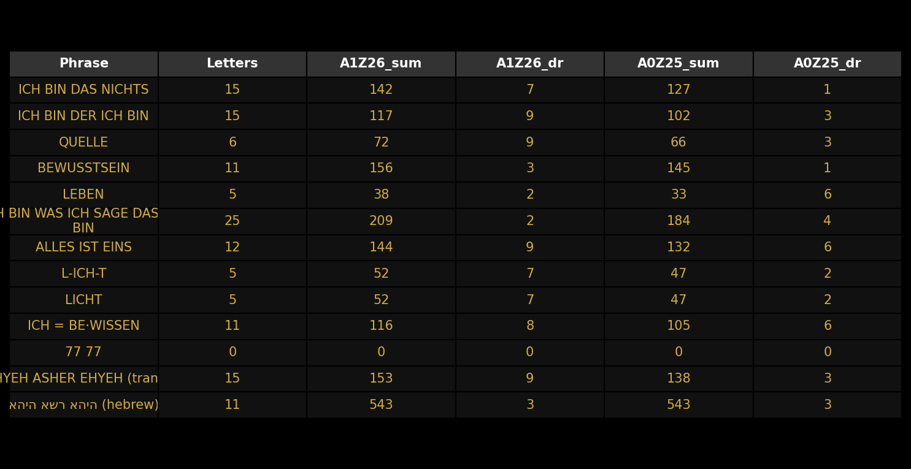

Diese Tabelle zeigt die Summen und digitalen Wurzeln für relevante Phrasen in zwei gängigen Mappings:

Wichtig: Ein Wechsel des Mappings (z. B. A1Z26 → A0Z25) verschiebt alle Buchstabenwerte um −1 pro Buchstabe. Das kann eine Zahl wie 7 in 6 überführen und erklärt, wie dasselbe Wort in unterschiedlichen Systemen unterschiedlich interpretiert wird (z. B. 7 vs. 666).
Lade die PNG und diese HTML ins gleiche Verzeichnis deines GitHub-Repos und veröffentliche die Seite über GitHub Pages.